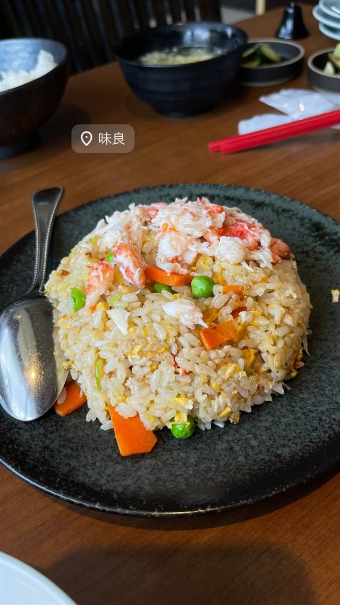
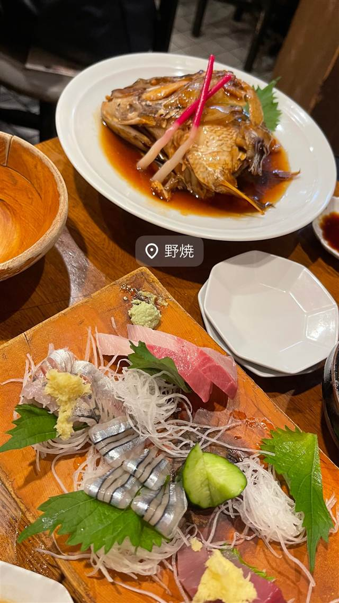
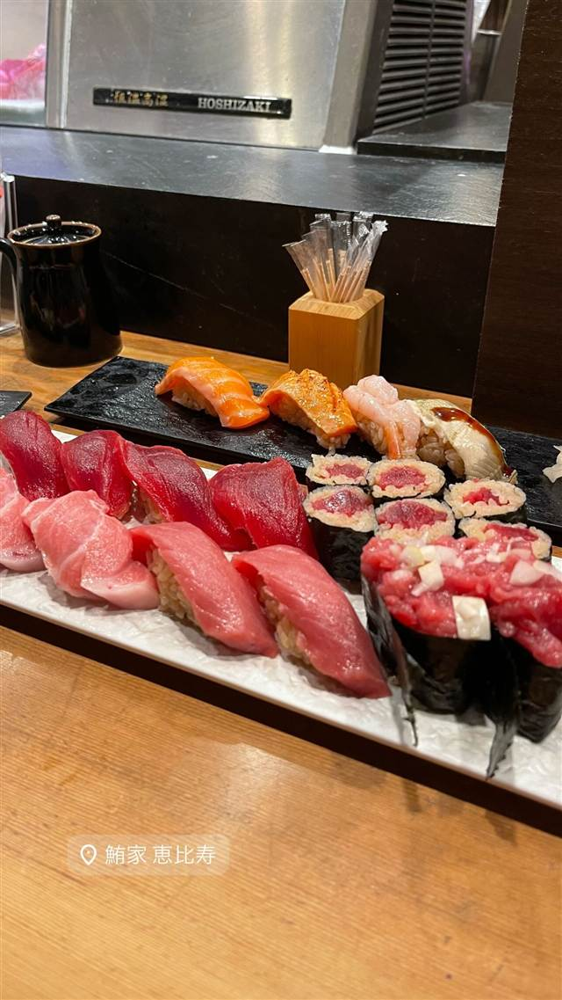

中国料理 味良（ミヨシ）
地域密着の町中華で評判のチャーハンと蟹炒飯
味良
生田駅近くにある地域密着の町中華。1階のテーブル席と2階の座敷を備え、チャーハンが評判の一品として知られる。
REVIEWS
世間の評判
3.23食べログ
本格中華の味とお洒落な空間
- 町中華とは思えない本格的な味とお洒落な空間を高く評価する声が多い
- 値段の割に雰囲気も味も高級感があってお得だという声が非常に多い
- 訪問するたびに味の印象が異なると感じる人もいるという声が一部ある
食べログ
| 看板 | 炒飯（チャーハン） |
|---|---|
| どこから | 東京から1時間ほど |
| 営業時間 | 月・火 11:00-15:00、17:00-21:00 水・木 休み 金〜日 11:00-15:00、17:00-21:00 |
| 予算 | 昼 ～¥999 夜 ¥1,000～¥1,999 |
| 定休日 | 水曜・木曜 |
| 場所 | 生田 神奈川県川崎市多摩区生田7-9-6 |
| メモ | 生田駅近く、1階はテーブル席、2階は座敷のある町中華 |
食べたもの：蟹炒飯
NEARBY
近い店・同じ系統の店
-
 ★
二郎系(直系) 生田
ラーメン二郎 生田駅前店
三田本店・立川・目黒などで修行した店主が出す一杯
昼 ～¥999 夜 ¥1,000～¥1,999
★
二郎系(直系) 生田
ラーメン二郎 生田駅前店
三田本店・立川・目黒などで修行した店主が出す一杯
昼 ～¥999 夜 ¥1,000～¥1,999
-
 カフェ 読売ランド前（旧西生田）
Entertainment Cafe & Dining BINGO！
沖縄から直送の食材で作る沖縄そばとタコライス
夜 ¥3,000～¥3,999
カフェ 読売ランド前（旧西生田）
Entertainment Cafe & Dining BINGO！
沖縄から直送の食材で作る沖縄そばとタコライス
夜 ¥3,000～¥3,999
-
 うどん・ほうとう 生田
大隅庵
うどん・ほうとう 生田
大隅庵
-

海鮮料理 大井町 野焼 1976年創業、昭和の趣で味わう甘めの煮魚 夜 ¥6,000～¥7,999 -
 海鮮料理 恵比寿駅
門（もん）
天候や海流を見極めて仕入れる旬の魚介と日本酒
夜 ¥5,000～¥5,999
海鮮料理 恵比寿駅
門（もん）
天候や海流を見極めて仕入れる旬の魚介と日本酒
夜 ¥5,000～¥5,999
-

海鮮料理 恵比寿駅 寿司 鮪家（つなや） 豊洲のマグロ仲卸が直営する大トロなど部位食べ比べ 夜 ¥6,000～¥7,999